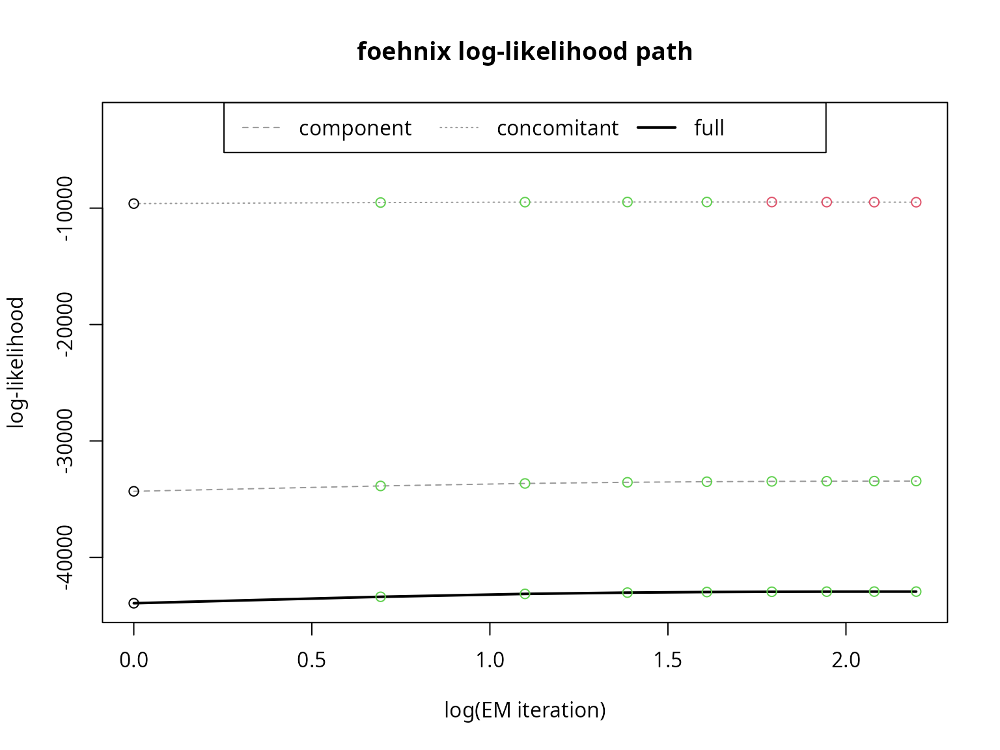

vignettes/simulation.Rmd
simulation.RmdVerification with Simulated Data
The foehnix package allows to estimate Gaussian and logistic mixture models with and without censoring and truncation. The package default is Gaussian without censoring or truncation which typically works quite well. Fore those interested in censoring and truncation please have a look to the Advanced pages of this manual.
This page shows two examples using simulated data from a Gaussian mixed distribution and a logistic mixed distribution without additional concomitants and the corresponding model fits.
Gaussian
Simulate random data from a mixed Gaussian distribution using the following true parameters:
The first component has a mean (mu) of 1.0 and a standard deviation (sigma) of 1.0, the second component a mean of 5.0 and a corresponding standard deviation of 2.0. Given these parameters we can draw a set of random numbers from a two-component Gaussian mixture distribution:
# Drawing 15000 random numbers from Gaussian mixed distribution
family <- foehnix:::foehnix_gaussian(); set.seed(666)
data <- data.frame(y = family$r(c(10000, 5000), mu = true$mu, sigma = true$sigma))
# Convert data to zoo (time series object) as foehnix expects
# time series input data
data <- zoo(data, as.Date(1:nrow(data), origin = "1970-01-01"))Our data set now consists of 15000 random numbers from the two components specified above (true) whereof two third come from the first component, one third from the second component. Or in other words: the true probability that an observation comes from the second component is 0.333. We can now estimate a foehnix model:
# Estimate foehnix model
mod <- foehnix(y ~ 1, data = data)
coef(mod)## Coefficients of foehnix model
## Model formula: y ~ 1
## foehnix family of class: Gaussian
## No concomitant model in use
##
## Coefficients
## mu1 sigma1 mu2 sigma2
## 1.023433 1.004856 5.053293 1.938052By default, a Gaussian mixture model is estimated. coef(mod) is used to extract the estimated coefficients:
- Estimated parameters for component 1:
-
mu(or mean): 1.02 (true was 1) -
sigma(or standard deviation): 1 (true was 1)
-
- Estimated parameters for component 2:
-
mu(or mean): 5.05 (true was 5) -
sigma(or standard deviation): 1.94 (true was 2)
-
# Path of log-likelihood sum during optimization
plot(mod, which = "loglik")
# Plotting mixed distribution
# Calculate density of the two components
x <- seq(min(data$y), max(data$y), length = 501)
density1 <- family$d(x, coef(mod)["mu1"], coef(mod)["sigma1"])
density2 <- family$d(x, coef(mod)["mu2"], coef(mod)["sigma2"])
hist(data$y, breaks = 100, freq = FALSE,
xlab = "simulated data",
main = "Histogram of Simulated Data\nPlus Estimated Mixed Model Density")
lines(x, density1 * (1 - mean(fitted(mod))), col = 2, lwd = 2)
lines(x, density2 * mean(fitted(mod)), col = 4, lwd = 2)
lines(x, density1 * (1 - mean(fitted(mod))) + density2 * mean(fitted(mod)), col = 6, lty = 3, lwd = 3)
legend("topright", col = c(2, 4, 6), lwd = 2, lty = c(1, 1, 3), bty = "n",
legend = c("Component 1", "Component 2", "Mixture Density"))Logistic
The very same can be done using a two-component logistic mixture model. As above a set of 15000 random values from the mixture model are drawn and modelled using foehnix with the same true parameters as above for the Gaussian model.
# The true parameters of the distribution
true <- list(mu = c(1, 5), sigma = c(1, 2))
# Simulate data based on logistic distribution and create time series
family <- foehnix:::foehnix_logistic(); set.seed(666)
data <- data.frame(y = family$r(c(10000, 5000), mu = true$mu, sigma = true$sigma))
data <- zoo(data, as.Date(1:nrow(data), origin = "1970-01-01"))All we have to do is to specify family = "logistic" when calling the foehnix(...) method:
# Estimate foehnix model
mod <- foehnix(y ~ 1, data = data, family = "logistic")
coef(mod)## Coefficients of foehnix model
## Model formula: y ~ 1
## foehnix family of class: logistic
## No concomitant model in use
##
## Coefficients
## mu1 sigma1 mu2 sigma2
## 1.030540 1.004527 5.047187 1.997823- Estimated parameters for component 1:
-
mu(or mean): 1.03 (true was 1) -
sigma(or standard deviation): 1 (true was 1)
-
- Estimated parameters for component 2:
-
mu(or mean): 5.05 (true was 5) -
sigma(or standard deviation): 2 (true was 2)
-
# Path of log-likelihood sum during optimization
plot(mod, which = "loglik")
# Mean probability
meanprob <- mean(fitted(mod), na.rm = TRUE)
# Plotting mixed distribution
# Calculate density of the two components
x <- seq(min(data$y), max(data$y), length = 501)
density1 <- family$d(x, coef(mod)["mu1"], coef(mod)["sigma1"])
density2 <- family$d(x, coef(mod)["mu2"], coef(mod)["sigma2"])
hist(data$y, breaks = 100, freq = FALSE,
xlab = "simulated data",
main = "Histogram of Simulated Data\nPlus Estimated Mixed Model Density")
lines(x, density1 * (1 - mean(fitted(mod))), col = 2, lwd = 2)
lines(x, density2 * mean(fitted(mod)), col = 4, lwd = 2)
lines(x, density1 * (1 - mean(fitted(mod))) + density2 * mean(fitted(mod)), col = 6, lty = 3, lwd = 3)
legend("topright", col = c(2, 4, 6), lwd = 2, lty = c(1, 1, 3), bty = "n",
legend = c("Component 1", "Component 2", "Mixture Density"))